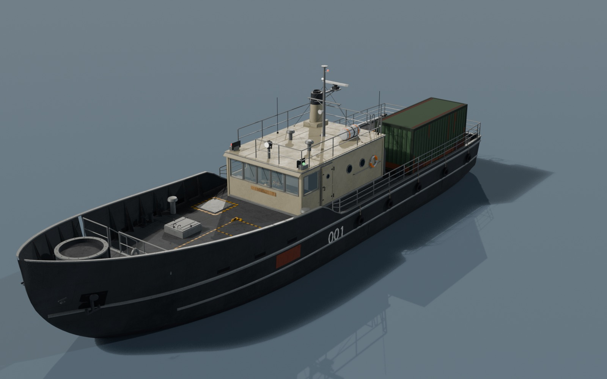
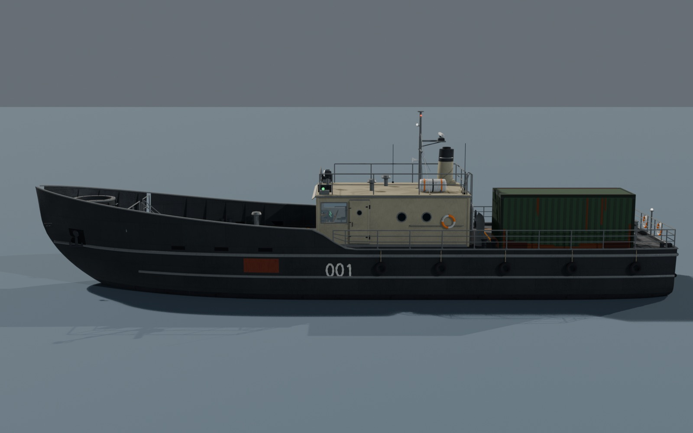
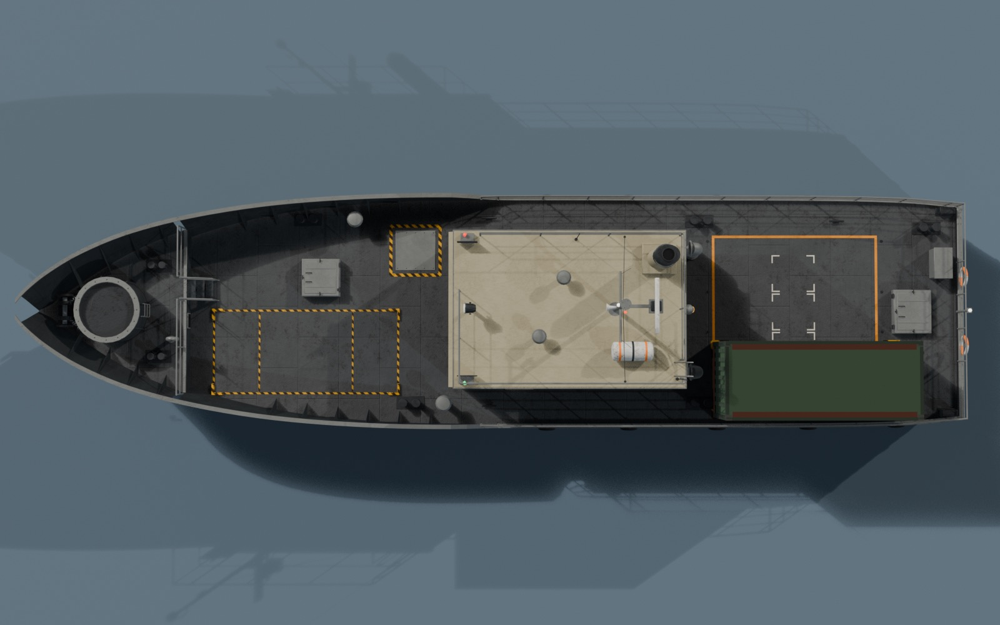

Scrapper
Runners is in development. Details will change.
The clean Scrapper: the starter Rust bucket rebuilt at ARI's yard. Picks up loose scrap and carries one container and a few pallets. Cannot tow.






Her sheet
- Class
- Scavenger
- Level
- 0
- Size
- 30 m long, 7.6 m beam
- Containers on deck
- 1 × 20 ft
- Pallet places
- 3
- Weapon mounts
- 1: 1 small
- Scrap
- 8 units, open bin on deck, lifted by her magnet crane
- Deck crane
- grade 1
- Speed / hull
- 48 m/s, 100 HP
- Price
- 500 CR (a refit of the Rust bucket at ARI's yard)
Her look
A small harbour workboat: dark hull with a raised bow, tan wheelhouse just forward of midships with a mast, radar and short funnel, a crane on the foredeck, and a long flat after deck with stern rails. The starter, the Rust bucket, is this boat run down and has a page of her own.
How she works
- Refit: players start in the Rust bucket, the same boat run down. At ARI's yard she is traded in and rebuilt as this clean Scrapper for 500 CR, a little faster and tougher. Every ship offered from the Rust bucket is offered from her too.
- Cargo: 1 × 20 ft container on marked deck spots and 3 pallets on deck. A crane at the berth lifts cargo on and off from above; nothing rolls on.
- Scrap: her deck crane swings its magnet out over the side, lifts scrap from the water and drops it in the open bin on deck. Holds 8 units.
- Loot: sunk pirates leave pallets floating, each with a random load. Her magnet crane lifts a pallet aboard onto one of her 3 pallet places, so a full deck takes no more.
- Towing: none. She has no winch.
- Fighting: 1 weapon mount (1 small). The player buys and fits the guns; each one trains and fires on its own pad.
- Handling: 48 m/s top speed, 100 hull points.
Ideas for her
Proposals, not decided yet.
- Proposal: the scrap bin is a real open-topped hopper, so the pile of scrap can be seen rising as she fills.
Her story
Her story has not been written yet.
From the World Atlas
The boat every player starts in. Picks up loose scrap and carries a few pallets. Cannot tow.
Starter: the player's Scrapper is the Rust bucket, her own model: the approved Scrapper made into a boat that was due for the scrapyard: bent rails, roof rusted through, windows boarded up. Booker gives the Runner a boat nobody wanted. The clean Scrapper is the one you can buy. Because she's in bad shape the Rust bucket is slightly slower and weaker: 45 m/s and 90 hull points (clean Scrapper 48 m/s, 100), the same cut as the older rusty copies.
World Atlas, Runners 2055: the ships